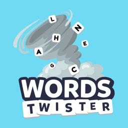

Words Twister
English
The twister picks a letter and four categories — animal, fruit, country, brand… Fill them all with words that start with that letter and hit STOP! before everyone else. Play against the computer, take the daily challenge, or play with up to 7 friends nearby over local Wi-Fi — no internet or account needed.
Português
O tornado sorteia uma letra e quatro categorias — animal, fruta, país, marca… Preencha tudo com palavras que comecem com a letra e aperte STOP! antes de todo mundo. Jogue contra o computador, faça o desafio diário ou jogue com até 7 amigos por perto pelo Wi-Fi local, sem internet e sem cadastro.
Español
El tornado elige una letra y cuatro categorías — animal, fruta, país, marca… Llénalas con palabras que empiecen con esa letra y pulsa STOP! antes que nadie. Juega contra la computadora, haz el reto diario o juega con hasta 7 amigos cerca por Wi-Fi local, sin internet ni cuenta.